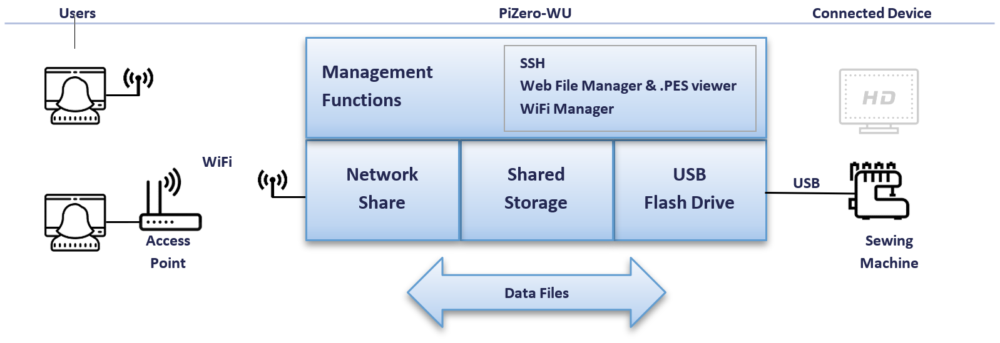
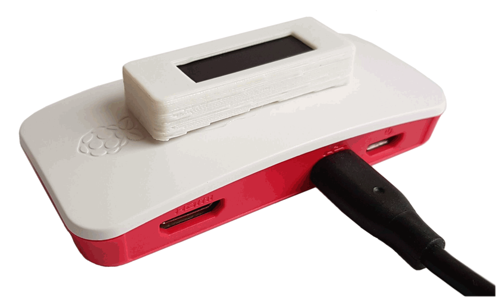
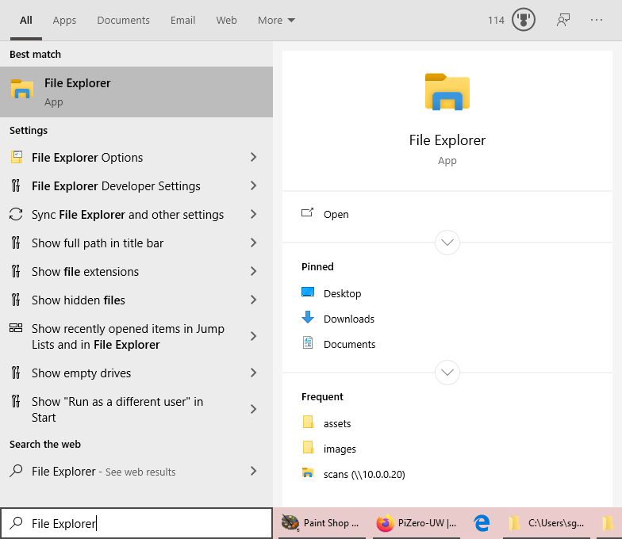
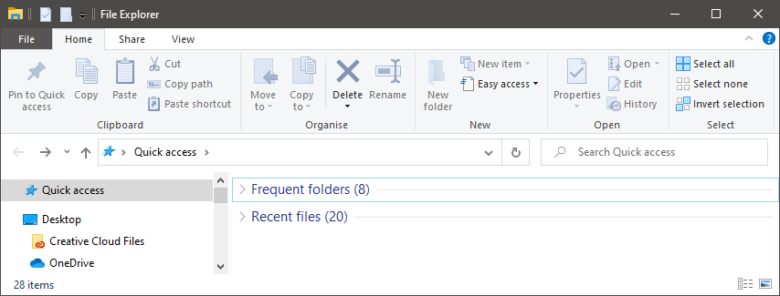
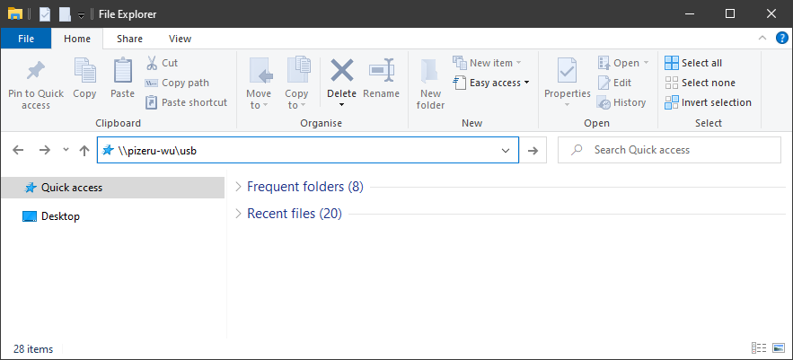
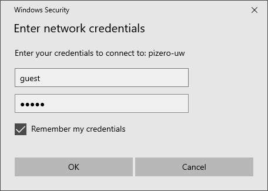
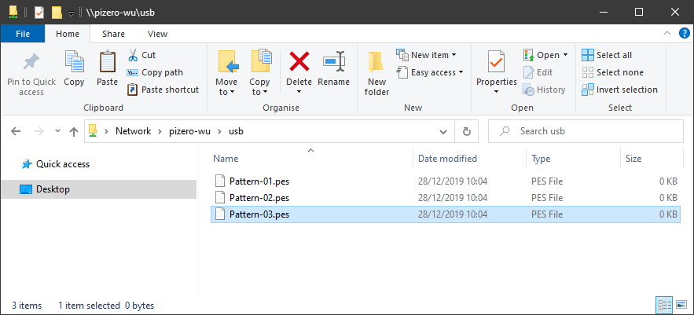
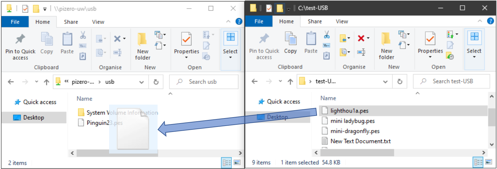

- Dashboard
- Info
Info - Using Your PiZero-WU With Windows 10
The PiZero-WU - Raspberry Pi Model Zero WiFi with USB memory stick emulation. The on-board software allows a WiFi network folder to be accessed which appears to the USB connected device (e.g. television, sewing machine etc.) as a USB memory key / stick. This documentation refers to revision '1.0 - Sunrise' of the Pi-Zero-WU module.
Concepts
The PiZero-WU comprises a computer, micro SD Card memory storage, WiFi and management software. These are configured to allow files to be remotely managed and made available as a USB Flash drive (USB memory key / Pen drive) data storage device to a physically connected device e.g. a television, sewing machine or other USB device as shown in the overview below.
Files can be transferred over a WiFi network to the shared storage contained in the PiZero-WU for the connected device to read. The PiZero-WU also contains management software to allow configuration of the device and management of files on the device.
Your PiZero-WU uses its internal memory to emulates a USB memory key device. The default configuration is for 2 Gb (2 Giga bytes) of storage capacity. The default drive format is FAT 32, as this is the format most commonly accessible by Sewing machines, televisions and other devices typically used with the PiZero-WU.
Note Your PiZero-WU uses a high quality branded SD Flash memory card (typically Sandisk or Samsung) . In common with all USB Flash memory disks the following should be observed for optimal performance and long life:
- Do not disconnect or power down you PiZero-WU when writing files to the PiZero-WU
- Avoid adverse environmental conditions (moisture, heat, humidity, vibration)
- Avoid continuous or hi-frequency writing of files to your PiZero-WU
- Always keep a separate physical backup of any data stored on the device
Connection
To get started, connect your PiZero-WU to your device using a USB cable. The connection will provide power to the PiZero-WU and enable it to be configured if required.
Typically a 'USB Micro B to USB A' cable is required to connect your PiZero-WU to your device using a USB cable. The recomended cable length is not more than 2 meters.
Make sure the correct connection to the PiZero-WU is used. The connection shown in the picture should be connected to your device (Television or Sewing Machine etc.).
The HDMI connector on the left is not normally used, the outer most USB connector is only used for specific installations requireing seperate power provision and shold not typicall be used.
WiFi Configuration
The PiZero-WU can be accessed over a WiFi connection. The PiZero-WU needs to be configured to enable the WiFi connection. See the user manual for instructions on how to configure the WiFi connection.
There are two modes of WiFi Connection:
- Access Point client mode (acts like your computer, phone or tablet on the WiFi network)
- HotSpot modes (acts as an independant mini WiFi Access Point to allow a device to connect directly to the PiZero-WU)
Note
The PiZero-WU can act as a USB memory storage device without WiFi configuration. Ensure files are not being written to the PiZero-WU when removing or connection. Always use the USB 'Eject' function when disconnecting the device to ensure correct shutdown of USB connectivity. See your device (computer, phone or tablet etc.) operating instructions for details on how to correctly perform the disconnect function.
Transferring Files (Drag & Drop)
There are two ways to transfer files to your PiZero-WU. This section details Windows 10 drag and drop functionality.
First time use of your PiZero-WU with a WiFi connection to the device
On the Windows 10 task bar enter the words 'File Explorer' as shown below (or select START | RUN and enter 'explorer.exe' from the Windows 10 start menu).
Select the file explorer so that it appears as shown below:
Enter \\pizero-wu\usb into the File Explorer Address Bar as shown below and press enter or the 'Go To' button at the end of the 'Address Bar'.
On first time use, a dialog box will appear. Enter guest for the user name and guest for the password. Ensure the Remember my credentials check box is selected then press the OK button
Your Pi-Zero-WU disk should now be shown as below (the example files may not be listed, a recently formatted system will typically show no files or Pinguin23.pes ):
You can now open another File Explorer using the method previously detailed and drag files from the newly opened File Explorer to the Pi-Zero-WU.
The image below shows a file (lighthou1a.pes) selected with the left mouse button (and whilst continuing to be held down) being dragged into the \\pizero-uw\usb folder. (note that the colours may differ depending on the settings of your computer.)
Warrantability or Fitness For Purpose
Copyright And Disclaimer Notice For Document, Software And Any Associated Hardware
Copyright (c) 2020 OneOfTheInfiniteMonkeys. ALL RIGHTS RESERVED.
THIS PRODUCT IS PROVIDED BY THE COPYRIGHT HOLDERS AND CONTRIBUTORS "AS IS" AND ANY EXPRESS OR IMPLIED WARRANTIES, INCLUDING, BUT NOT LIMITED TO, THE IMPLIED WARRANTIES OF MERCHANTABILITY AND FITNESS FOR A PARTICULAR PURPOSE ARE DISCLAIMED. IN NO EVENT SHALL OneOfTheInfiniteMonkeys BE LIABLE FOR ANY DIRECT, INDIRECT, INCIDENTAL, SPECIAL, EXEMPLARY, OR CONSEQUENTIAL DAMAGES (INCLUDING, BUT NOT LIMITED TO, PROCUREMENT OF SUBSTITUTE GOODS OR SERVICES; LOSS OF USE, DATA, OR PROFITS; OR BUSINESS INTERRUPTION) HOWEVER CAUSED AND ON ANY THEORY OF LIABILITY, WHETHER IN CONTRACT, STRICT LIABILITY, OR TORT (INCLUDING NEGLIGENCE OR OTHERWISE) ARISING IN ANY WAY OUT OF THE USE OF THIS PRODUCT, EVEN IF ADVISED OF THE POSSIBILITY OF SUCH DAMAGE.
Trademarks owned by respective holders, see documentation for details.Configurations, works, designs, software by OneOfTheInfiniteMonkeys Copyright © OneOfTheInfiniteMonkeys 2020 - All rights reserved